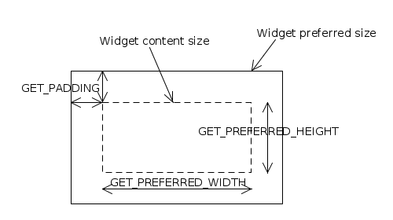

ej.mwt.Widget
ej.mwt.Widget
|
||||||||||
| PREV CLASS NEXT CLASS | FRAMES NO FRAMES | |||||||||
| SUMMARY: NESTED | FIELD | CONSTR | METHOD | DETAIL: FIELD | CONSTR | METHOD | |||||||||
java.lang.Object
public abstract class Widget
Widget is the superclass of all the user interface objects.
There are a number of important concepts involving widgets:
Whenever the state of a widget changes in a way that may affect the layout of the panel of which it is a part then the hierarchy of the widget must
be ask to be revalidated. This can be achieved by invoking revalidate() on the widget.
Several Widget methods, such as setSize(int, int), have the side-effect of asking for a revalidation of the widget. It is
normal for other methods in Widget subclasses that affect state to do likewise.
Validation is the process laying out the widgets on a panel. This is performed by invoking Panel.validate(), which has the side-effect of
performing any required repainting after validation.
The validate(int, int) method should not normally be invoked by applications or widget implementations. It is used by the
Panel to propagate the validation request down through the widget hierarchy - widgets with children propagate the call to their
children. Instead, an application will normally invoke Panel.revalidate() after making a set of changes to widgets.
Any widget can be asked to repaint itself by invoking repaint(). If a widget has children it will ask them to repaint. If the widget is
transparent it will cause the relevant area of its parent to be repainted. Note that a repaint request does not trigger validation, and the scope
of the repainting that results from a call to repaint() will never exceed the widget itself, its children (recursively), and, if it is
transparent, its parent (recursively if the parent is also transparent).
A widget's preferred size is its optimal displayed size given its content and including any padding. Calling validate(int, int) causes the
preferred size to be determined, normally with the assistance of a renderer. The preferred size is distinct from the widget's actual size on the
display (which may itself be subject to clipping).
The actual size is set by calling setSize(int, int) or setBounds(int, int, int, int). Note that a widget's size never includes
its margin. A Widget is rendered within a rectangle whose size is defined by the actual size.
Renderer,
WidgetRenderer| Constructor Summary | |
|---|---|
Widget()
Creates a new widget. |
|
Widget(int x,
int y,
int width,
int height)
Deprecated. use Widget() and setBounds(int, int, int, int) |
|
| Method Summary | |
|---|---|
protected void |
cleanRendererCache()
Cleans the renderer cache. |
int |
computeScore(Renderer renderer)
Computes the score of the given renderer by comparing the getStyle() of the widget with the Renderer.getManagedStyle() of the
specified renderer. |
boolean |
contains(int x,
int y)
Returns true if the (x,y) location is in the widget bounds, false otherwise.The location is considered here as a relative location to parent. |
void |
gainFocus()
Notifies the widget that it is now the focus owner of its panel and should be repainted. |
int |
getAbsoluteX()
Returns the absolute x coordinate of the widget. |
int |
getAbsoluteX(int relativeX)
Returns the absolute x coordinate computed from the given x coordinate relative to the widget. |
int |
getAbsoluteY()
Returns the absolute y coordinate of the widget. |
int |
getAbsoluteY(int relativeY)
Returns the absolute y coordinate computed from the given y coordinate relative to the widget. |
int |
getHeight()
Returns the height of the widget. |
Panel |
getPanel()
Gets the panel of this widget or null if the widget is not in a panel. |
Composite |
getParent()
Gets the parent of this widget or null if the widget is not in a hierarchy. |
int |
getPreferredHeight()
Returns the preferred height of the widget. |
int |
getPreferredWidth()
Returns the preferred width of the widget. |
int |
getRelativeX(int absoluteX)
Returns the x coordinate relative to the widget computed from the given absolute x coordinate. |
int |
getRelativeY(int absoluteY)
Returns the y coordinate relative to the widget computed from the given absolute y coordinate. |
Renderer |
getRenderer()
Gets the renderer associated with this widget in the rendering context. |
int |
getStyle()
Gets the style of this widget. |
Widget |
getWidgetAt(int x,
int y)
Returns the widget at the specified location. |
int |
getWidth()
Returns the width of the widget. |
int |
getX()
Returns the x coordinate of the widget relative to its parent. |
int |
getY()
Returns the y coordinate of the widget relative to its parent. |
boolean |
handleEvent(int event)
Called by the system if the widget is the owner of the focus of the active panel. |
boolean |
hasFocus()
Gets whether or not this widget is the focus owner of its panel and its panel is the active one. |
boolean |
isEnable()
Deprecated. use isEnabled() |
boolean |
isEnabled()
Gets whether or not this widget is enabled. |
boolean |
isShown()
Gets whether or not the widget is shown on a shown panel. |
boolean |
isTransparent()
Gets whether this widget is transparent or not. |
boolean |
isValid()
Gets whether this widget is valid. |
boolean |
isVisible()
Gets whether this widget is visible or not. |
void |
lostFocus()
Notifies the widget that it is no longer the focus owner of its panel should be repainted. |
void |
repaint()
Requests a repaint of this entire widget. |
void |
repaint(int x,
int y,
int width,
int height)
Requests a repaint of a zone of this widget. |
void |
requestFocus()
Sets this widget as the focus owner of its panel if it is enabled. |
boolean |
requestFocus(int direction)
Sets this widget as the focus owner of its panel if it is enabled. |
void |
revalidate()
Lays out all the hierarchy of the panel containing this widget if one exists. |
void |
setBounds(int x,
int y,
int width,
int height)
Sets the bounds of this widget. |
void |
setEnable(boolean enable)
Deprecated. use setEnabled(boolean) |
void |
setEnabled(boolean enable)
Sets this widget to be enabled or not. |
void |
setLocation(int x,
int y)
Sets the location of this widget. |
void |
setPreferredSize(int preferredWidth,
int preferredHeight)
Sets the preferred size of the widget. |
void |
setSize(int width,
int height)
Sets the size of this widget. |
void |
setTransparent(boolean transparent)
Deprecated. see isTransparent() |
void |
setVisible(boolean visible)
Sets this widget visible or not. |
void |
validate(int widthHint,
int heightHint)
Lays out this widget if visible. |
| Methods inherited from class java.lang.Object |
|---|
equals, getClass, hashCode, notify, notifyAll, toString, wait, wait, wait |
| Constructor Detail |
|---|
public Widget()
Creates a new widget.
By default:
0,
public Widget(int x,
int y,
int width,
int height)
Widget() and setBounds(int, int, int, int)
Creates a new widget specifying its bounds. Its position is relative to the position of its parent.
x - the relative x coordinate of the widgety - the relative y coordinate of the widgetwidth - the width of the widgetheight - the height of the widget| Method Detail |
|---|
public int getAbsoluteX()
Returns the absolute x coordinate of the widget.
That is, the x coordinate relative to the display.
public int getAbsoluteY()
Returns the absolute y coordinate of the widget.
That is, the y coordinate relative to the display.
public int getX()
Returns the x coordinate of the widget relative to its parent.
getX in interface Renderablepublic int getY()
Returns the y coordinate of the widget relative to its parent.
getY in interface Renderablepublic int getWidth()
Returns the width of the widget.
If the widget is not visible, its width is always equals to 0.
getWidth in interface Renderablepublic int getHeight()
Returns the height of the widget.
If the widget is not visible, its height is always equals to 0.
getHeight in interface Renderablepublic int getPreferredWidth()
Returns the preferred width of the widget.
The result returned is meaningful only if isValid() is true or if setPreferredSize(int, int)
has been called explicitly.
public int getPreferredHeight()
Returns the preferred height of the widget.
The result returned is meaningful only if isValid() is true or if setPreferredSize(int, int)
has been called explicitly.
public void setPreferredSize(int preferredWidth,
int preferredHeight)
Sets the preferred size of the widget.
preferredWidth - the width to setpreferredHeight - the height to set
public void setLocation(int x,
int y)
Sets the location of this widget.
If the widget is on a panel hierarchy, it is asked to be revalidated.
x - the x coordinate to set, relative to the parenty - the y coordinate to set, relative to the parentrevalidate()
public void setSize(int width,
int height)
Sets the size of this widget.
If the widget is on a panel hierarchy, it is asked to be revalidated.
width - the width to setheight - the height to setrevalidate()
public void setBounds(int x,
int y,
int width,
int height)
Sets the bounds of this widget.
If the widget is on a panel hierarchy, it is asked to be revalidated.
x - the x coordinate to set, relative to the parenty - the y coordinate to set, relative to the parentwidth - the width to setheight - the height to setrevalidate()public int getRelativeX(int absoluteX)
Returns the x coordinate relative to the widget computed from the given absolute x coordinate.
absoluteX - the absolute x coordinate to convert
public int getRelativeY(int absoluteY)
Returns the y coordinate relative to the widget computed from the given absolute y coordinate.
absoluteY - the absolute y coordinate to convert
public int getAbsoluteX(int relativeX)
Returns the absolute x coordinate computed from the given x coordinate relative to the widget.
relativeX - the widget relative x coordinate to convert
public int getAbsoluteY(int relativeY)
Returns the absolute y coordinate computed from the given y coordinate relative to the widget.
relativeY - the widget relative y coordinate to convert
public boolean isVisible()
Gets whether this widget is visible or not.
true if this widget is visible, false otherwise.setVisible(boolean)public void setVisible(boolean visible)
Sets this widget visible or not.
Declaring a widget as invisible means that it does not appear on the screen and its size is (0, 0).
If the widget is on a panel hierarchy, it is asked to be revalidated.
visible - true to set this widget visible, false otherwiseisValid(),
revalidate()public void setTransparent(boolean transparent)
isTransparent()
public boolean isTransparent()
Gets whether this widget is transparent or not.
A widget is transparent if its renderer is null.
A transparent widget means that it will not repaint ALL the rectangular zone defined by its bounds. Then each time it needs to be repainted,
its parent (recursively if also transparent) will be repainted within the bounds of the widget.
Each time a non-transparent widget needs to be repainted, it is the only one to be repainted.
true if this widget is transparent, false otherwise.contains(int, int)
public boolean contains(int x,
int y)
true if the (x,y) location is in the widget bounds, false otherwise.
x - x coordinatey - y coordinate
true if the (x,y) location is in widget bounds, false otherwise.isTransparent()
public Widget getWidgetAt(int x,
int y)
Returns the widget at the specified location.
If this widget does not contains(x, y), null is returned, else this widget is returned.
The location is considered here as a relative location to parent.
x - x coordinatey - y coordinate
contains(x, y), null otherwise.public boolean hasFocus()
Gets whether or not this widget is the focus owner of its panel and its panel is the active one.
Returns false if this widget is not on a panel.
true if this widget is the focus owner, false otherwisePanel.isActive()public void requestFocus()
Sets this widget as the focus owner of its panel if it is enabled.
If the widget is not in a panel hierarchy, nothing is done.
public boolean requestFocus(int direction)
Sets this widget as the focus owner of its panel if it is enabled.
If the widget is not in a panel hierarchy, nothing is done.
The given direction must be one of MWT.UP, MWT.DOWN, MWT.LEFT, MWT.RIGHT.
Composed widgets can override this method in order to manage internal focus.
direction - the direction followed by the focus
true if the widget take the focus, false otherwisepublic void gainFocus()
Notifies the widget that it is now the focus owner of its panel and should be repainted.
The subclasses can override this method to add behavior.
public void lostFocus()
Notifies the widget that it is no longer the focus owner of its panel should be repainted.
The subclasses can override this method to add behavior.
public boolean isEnable()
isEnabled()
public void setEnable(boolean enable)
setEnabled(boolean)
public boolean isEnabled()
Gets whether or not this widget is enabled.
A widget that is not enabled cannot get focus.
A widget that is not visible is also disabled.
true if this widget is enabled, false otherwisepublic void setEnabled(boolean enable)
Sets this widget to be enabled or not.
A widget must be enabled in order to receive focus, to be the subject of mouse focus, or to receive events.
Requests a repaint of the widget.
enable - true if this widget is to be enabled, false otherwiserepaint()public void revalidate()
Lays out all the hierarchy of the panel containing this widget if one exists.
Panel.revalidate()
public void validate(int widthHint,
int heightHint)
Lays out this widget if visible.
Computes the preferred size of the widget using its renderer if it is a WidgetRenderer instance:
Renderer.getPadding() method,WidgetRenderer.getPreferredContentWidth(Widget) method,WidgetRenderer.getPreferredContentHeight(Widget) method.
After this call the preferred size will have been established:
The parameters defines the maximum size available for this widget, or MWT.NONE if there is no constraint.
widthHint - the width available for this widget or MWT.NONEheightHint - the height available for this widget or MWT.NONEisVisible(),
setPreferredSize(int, int)public boolean isValid()
Gets whether this widget is valid.
A widget is valid if all of these conditions are meet:
true if this widget is valid, false otherwiseisVisible(),
Panel.isValid()public Composite getParent()
Gets the parent of this widget or null if the widget is not in a hierarchy.
nullpublic Panel getPanel()
Gets the panel of this widget or null if the widget is not in a panel.
nullpublic boolean isShown()
Gets whether or not the widget is shown on a shown panel.
isShown in interface Renderabletrue if the widget is shown, false otherwisegetPanel(),
Panel.isShown()public void repaint()
Requests a repaint of this entire widget. This method returns immediately; the repaint of the widget is performed asynchronously.
If the widget is not shown, nothing is done.
If the widget is transparent, it requests a repaint of its parent within the widget's bounds.
repaint in interface Renderable
public void repaint(int x,
int y,
int width,
int height)
Requests a repaint of a zone of this widget. This method returns immediately; the repaint of the widget is performed asynchronously.
If the widget is not shown, nothing is done.
If the widget is transparent, it requests a repaint of its parent within the requested bounds.
repaint in interface Renderablex - the relative x coordinate of the area to repainty - the relative y coordinate of the area to repaintwidth - the width of the area to repaintheight - the height of the area to repaintpublic boolean handleEvent(int event)
Called by the system if the widget is the owner of the focus of the active panel.
The subclasses can override this method to add behavior.
By default, do nothing and return false (do not consume event).
handleEvent in interface Renderableevent - the event to handle
true if the widget has consumed the event, false otherwisepublic Renderer getRenderer()
Gets the renderer associated with this widget in the rendering context.
The renderer is located using the RenderingContext default algorithm.
The renderer is kept in cache until the state of the rendering context is changed.
getRenderer in interface Renderablenull if noneRenderingContext.getRenderer(Renderable)protected void cleanRendererCache()
Cleans the renderer cache.
Subclasses can call this method when the style of the desktop is changed and the best-fit renderer may be different
(even though the pool of renderers may not have changed).
The next time getRenderer() is called a new search will be performed.
public int getStyle()
Gets the style of this widget. The style is used to get the best match renderer to associate with this widget.
Always returns 0 but may be overridden in subclasses.
getStyle in interface RenderableRenderer.getManagedStyle(),
getRenderer()public int computeScore(Renderer renderer)
Computes the score of the given renderer by comparing the getStyle() of the widget with the Renderer.getManagedStyle() of the
specified renderer.
The score is bigger when the renderer matches the style and lower when it does not match.
The score is computed using the RenderingContext.computeScore(int, int) algorithm.
computeScore in interface Renderablerenderer - the renderer to compute score with
RenderingContext.computeScore(int, int)
|
||||||||||
| PREV CLASS NEXT CLASS | FRAMES NO FRAMES | |||||||||
| SUMMARY: NESTED | FIELD | CONSTR | METHOD | DETAIL: FIELD | CONSTR | METHOD | |||||||||